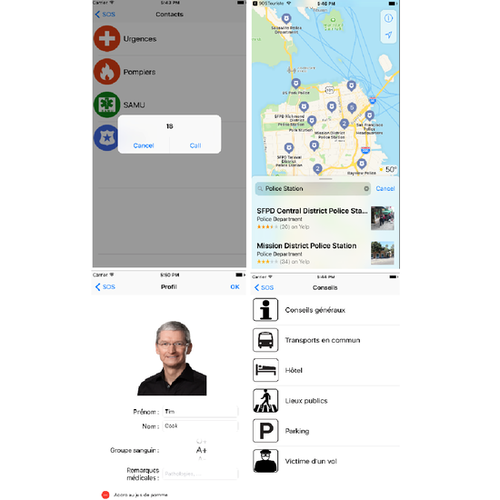
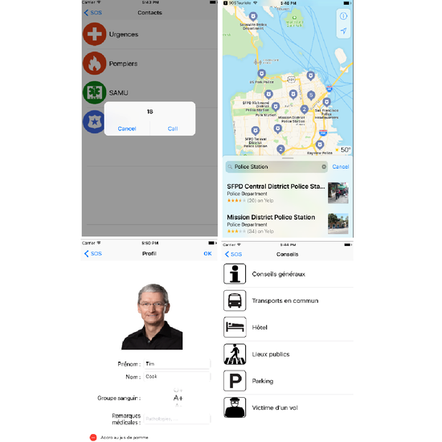

Über mich
5. Jahr Ingenieurstudent bei INSA de Rouen, studiere ich in der Abteilung Architektur der Informationssysteme.
Ich genieße wirklich neue Technologien und ich bin mir bewusst, dass sie auf unserer gegenwärtigen Gesellschaft stehen.
Ich schätze besonders den Data Mining und die Web-Entwicklung.
Ich suche ein 6 Monate Ingenieurpraktikum (von Februar bis Juli 2018) im Bereich der Webentwicklung.
Kontakt
Gautier DARCHEN
+33 6 59 20 92 40
darchen.gautier@gmail.com


 
